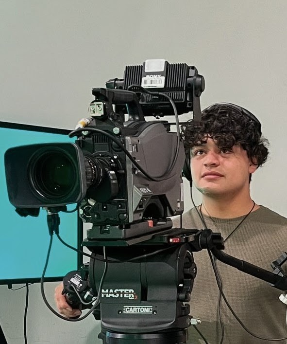

Sobre el Autor
Bienvenidos a mi blog académico. Este espacio ha sido creado para compilar y presentar las tareas correspondientes al 20% del último corte de la asignatura, fomentando la reflexión sobre nuestra Constitución, sociedad y entorno.
- Estudiante: [Duván Felipe Chala Rodríguiez]
- Clase: [Constitución Política]
- Día y Hora: [Lunes: 9:00 AM - 11:00 AM]
- Hora de acceso: Cargando...
Índice de Tareas
Preámbulo y Constitución
Análisis sobre el origen del poder y la estructura de la Constitución de 1991.
Tarea 2Esfera Pública y Privada
Fotoreportaje y reflexión sobre la complementariedad de nuestras esferas de vida.
Tarea 3Medioambiente y Chiribiquete
Reseña del Museo Nacional y análisis del documental sobre la memoria ancestral.
Tarea 4Música en Colombia
El legado de Joe Arroyo, "La Rebelión" y recomendaciones musicales (Podcast).
Tarea 5Literatura y violencia
Análisis del cuento "Espuma y nada más" y el futuro de la lectura en el país.
Tarea 6Mecanismos de DDHH
Infografía sobre los mecanismos constitucionales de protección ciudadana.
Tarea 7Animales y ética ciudadana
Postura sobre espectáculos, pólvora y la historia de un animal de compañía.
Tarea 8Liderazgos políticos
Análisis comparativo de líderes positivos y negativos a nivel nacional e internacional.
Tarea 9Turismo presente y futuro
Decálogo del turista respetuoso y recomendaciones de destinos clave.
Tarea 10Balance Final
Carta y reflexión personal sobre el futuro y la visión de Colombia a 30 años.